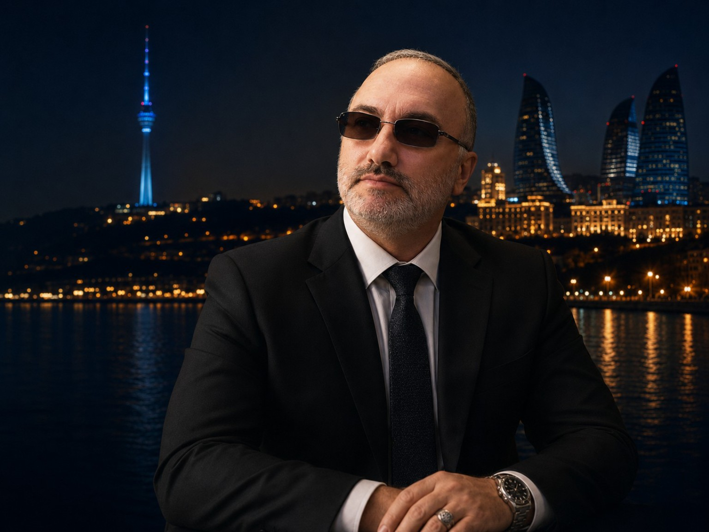
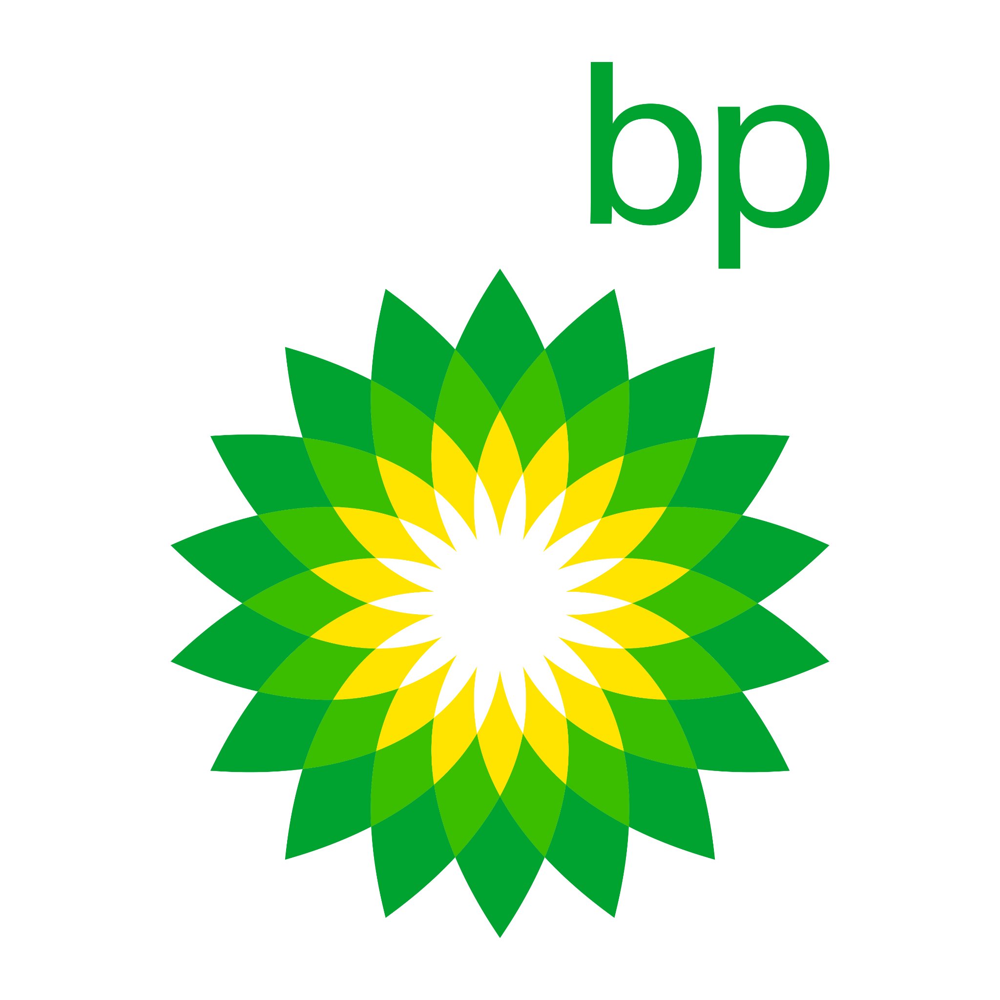
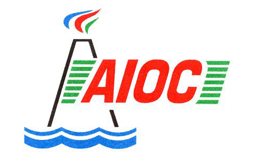
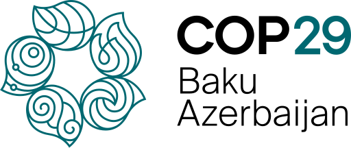
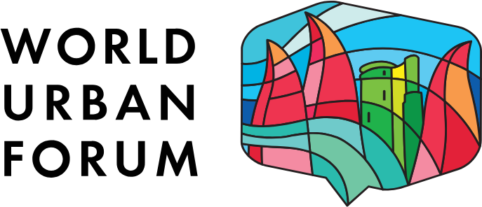
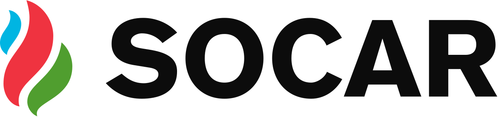
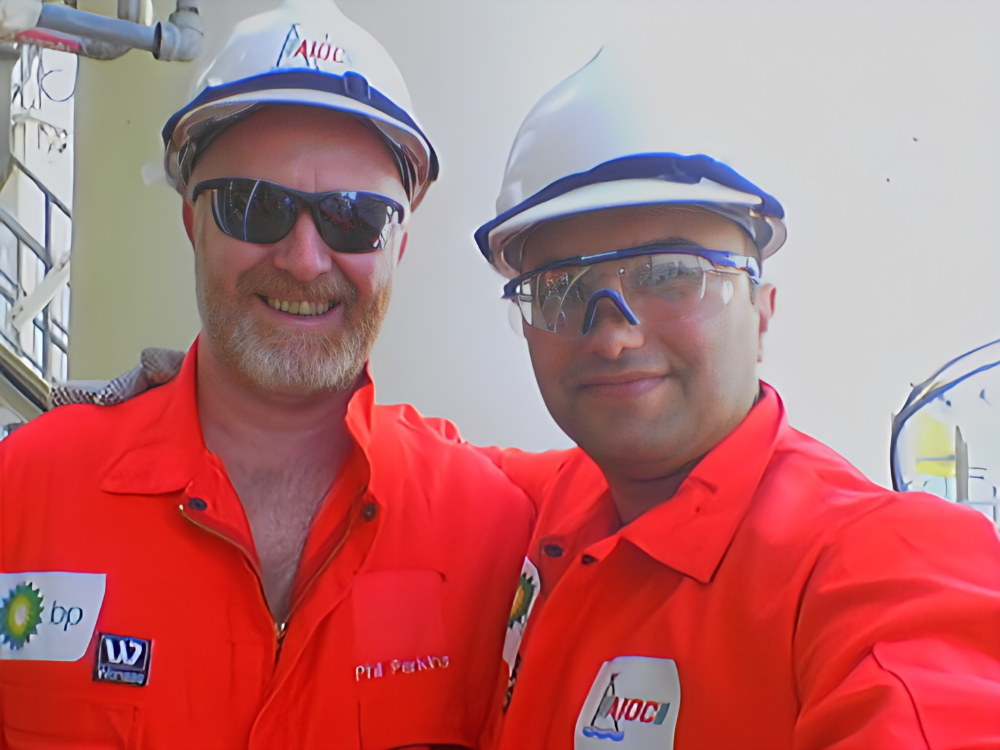

Translation
High-quality translation of technical, legal, medical and business documents.
Learn more →Language. Culture. Precision.
Professional Translator, Interpreter & Language Consultant
Specialized in Oil & Gas, Legal, Technical and Medical Translation






and more...How I can help you
High-quality translation of technical, legal, medical and business documents.
Learn more →Consecutive, simultaneous and liaison interpreting for meetings, conferences and events.
Learn more →Professional editing and proofreading to ensure accuracy, clarity and consistency.
Learn more →Language strategy, content localization and cross-cultural communication support.
Learn more →Oil & Gas, Energy, Legal, Maritime, Technical, Medical, Environment and more.
Learn more →
About me
I am a professional translator and interpreter with more than 20 years of experience in the oil & gas industry, legal, technical and medical fields.
I have had the privilege to work with leading international organizations, including BP and AIOC, and to serve as an official translator at COP29 in Baku, Azerbaijan.
My mission is simple: deliver accurate, culturally appropriate and impactful communication that connects people and builds trust.
More about meDr. Rasim Jafarov is a highly professional translator and interpreter. His expertise in the oil & gas sector and attention to detail are truly outstanding.